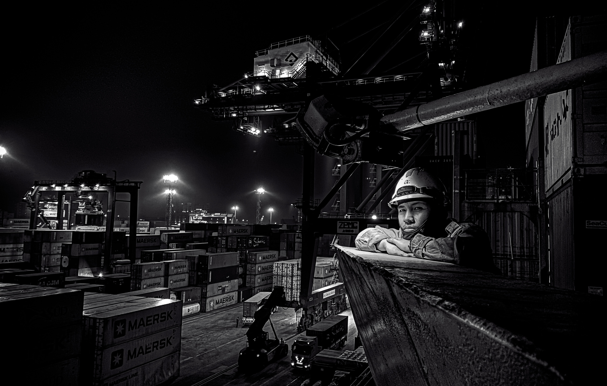

Maersk A/S • December 2022
Maersk Fleet Management & Technology Newsletter
Authored a four-page feature article and supplied the cover photograph, A Gaze Beyond Horizon, which received Highly Commended recognition at ITF Life at Sea 2022.